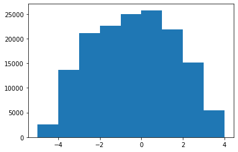

[1]:
import numpy as np
import matplotlib.pyplot as plt
from scipy.stats.distributions import norm, uniform
from pyDOE2 import lhs
import numpy as onp
from astropy.cosmology import Planck13
from astropy.table import Table, vstack
import subprocess
from astropy.constants import L_sun, M_sun
import glob
import pylab as plt
/Users/pdh21/anaconda3/envs/xidplus/lib/python3.6/site-packages/dask/config.py:168: YAMLLoadWarning: calling yaml.load() without Loader=... is deprecated, as the default Loader is unsafe. Please read https://msg.pyyaml.org/load for full details.
data = yaml.load(f.read()) or {}
[2]:
def generate_CIGALE_String(vals):
return onp.array2string(vals, separator=',',formatter={'float_kind':lambda x: "%.4f" % x}).replace('\n','')
[3]:
alpha=np.array([0.0625, 0.1250, 0.1875, 0.2500,0.3125, 0.3750, 0.4375, 0.5000, 0.5625, 0.6250, 0.6875, 0.7500,0.8125, 0.8750, 0.9375, 1.0000, 1.0625, 1.1250, 1.1875, 1.2500,1.3125, 1.3750, 1.4375, 1.5000, 1.5625, 1.6250, 1.6875, 1.7500, 1.8125, 1.8750, 1.9375, 2.0000, 2.0625, 2.1250, 2.1875, 2.2500,2.3125, 2.3750, 2.4375, 2.5000, 2.5625, 2.6250, 2.6875, 2.7500,2.8125, 2.8750, 2.9375, 3.0000, 3.0625, 3.1250, 3.1875, 3.2500, 3.3125, 3.3750, 3.4375, 3.5000, 3.5625, 3.6250, 3.6875, 3.7500, 3.8125, 3.8750, 3.9375, 4.0000])
alpha=alpha[::4]
#av_bc=onp.arange(0.1,4.0,0.2)
av_bc=[0.1,4.0]
#tau=onp.arange(500,6500,200)
tau=[500,6500]
age=[1000,10001]
z=[0.05,6.5]#10.0**onp.arange(-2.5,0.77,0.1)
#sfr=10.0**onp.arange(-2,4.75,0.25)
sfr=[-2,4.6]
agn_frac=[0,1.0]
[4]:
parameter_names=np.array(['tau_main','age_main','Av_BC','alpha','fracAGN','redshift'])
parameters={'tau_main':tau,'age_main':age,
'Av_BC':av_bc,'fracAGN':agn_frac,'redshift':z,'sfr':sfr}
[5]:
for i,s in enumerate(parameters):
print(i,s)
0 tau_main
1 age_main
2 Av_BC
3 fracAGN
4 redshift
5 sfr
[6]:
def sample_params(nsamp,parameters):
new_param=parameters.copy()
lhd = lhs(len(parameters), samples=nsamp,criterion='correlation')
for i,s in enumerate(parameters):
lhd[:,i]=lhd[:,i]*(parameters[s][1]-parameters[s][0])+parameters[s][0]
new_param[s]=lhd[:,i]
new_param['age_main']=np.round(new_param['age_main'])
new_param['tau_main']=np.round(new_param['tau_main'])
new_param['sfr']=10.0**new_param['sfr']
new_param['alpha']=alpha
return new_param
[7]:
sample_params(5,parameters)
[7]:
{'tau_main': array([3800., 5180., 2869., 5381., 612.]),
'age_main': array([5298., 2698., 4391., 6785., 9862.]),
'Av_BC': array([1.7287771 , 0.21802514, 2.59981293, 1.09354032, 3.27472263]),
'fracAGN': array([0.05450618, 0.9748011 , 0.29862853, 0.72503896, 0.51076031]),
'redshift': array([5.32345227, 2.82136079, 4.32401895, 2.05595922, 0.37094197]),
'sfr': array([5.14549956e-01, 5.00087365e+01, 1.45995585e+02, 4.49477446e-02,
8.06745298e+03]),
'alpha': array([0.0625, 0.3125, 0.5625, 0.8125, 1.0625, 1.3125, 1.5625, 1.8125,
2.0625, 2.3125, 2.5625, 2.8125, 3.0625, 3.3125, 3.5625, 3.8125])}
[ ]:
col_scale=['F560W','F770W','F1000W','F1130W','1280W','F1500W','F1800W','F2100W','F2550W',' spire_250',' spire_350',' spire_500',' SCUBA450','SCUBA850',' ALMA_band10','ALMA_band9','ALMA_band8','ALMA_band7','ALMA_band6','ALMA_band5','ALMA_band4','ALMA_band3']
[39]:
def generate_SEDs(parameter_names,parameters_bounds,path_to_cigale,path_to_ini_file,filename='tmp',nbatch=5):
col_scale=['F560W','F770W','F1000W','F1130W','F1280W','F1500W','F1800W','F2100W','F2550W','spire_250','spire_350','spire_500','SCUBA450','SCUBA850','ALMA_band10','ALMA_band9','ALMA_band8','ALMA_band7','ALMA_band6','ALMA_band5','ALMA_band4','ALMA_band3','dust.luminosity','sfh.sfr','stellar.m_star']
#col_scale=['omegacam_u', 'omegacam_g','omegacam_r','omegacam_i','omegacam_z', 'irac_i1','spire_250','spire_350','spire_500','dust.luminosity','sfh.sfr','stellar.m_star']
#loop over batchs
for b in range(0,nbatch):
print(b)
#generate samples of parameters
parameters=sample_params(3,parameters_bounds)
#loop over values in redshift (cant sample from prior due to link between redshift and main_age)
for i,z in enumerate(parameters['redshift']):
#set up boolean for frac to deal with the two fracagn variables in cigale (first one needs to be set to zero)
fracagn=True
#copy dictionary of parameters
parameters_tmp = dict(parameters)
#add redshift
parameters_tmp['redshift']=[z]
#add age_main
parameters_tmp['age_main']=[np.floor(Planck13.age(z).value*1000.0)]
#open the template cigale file
fin = open(path_to_cigale+path_to_ini_file)
#open the standard pcigale ini file to copy edits to
fout = open(path_to_cigale+"pcigale.ini", "wt")
#for each line
for line in fin:
#check if the line match any parameter names
ind_line=[param + " =" in line for param in parameter_names]
if any(ind_line):
param=parameter_names[onp.array(ind_line)]
#if parameter name is fracAGN check if this is the first
if param[0]=='fracAGN':
if fracagn:
fout.write(line)
fracagn=False
else:
#otherwise write out parameter values
fout.write(" "+param[0]+" = " + ", ".join(['{:.13f}'.format(i) for i in parameters_tmp[param[0]]]) + ' \n')
fracagn=True
else:
fout.write(" "+param[0]+" = " + ", ".join(['{:.13f}'.format(i) for i in parameters_tmp[param[0]]]) + ' \n')
else:
fout.write(line)
#close files
fin.close()
fout.close()
from shutil import copyfile, move, rmtree
#copy corresponding ini.spec file to standard path
copyfile(path_to_cigale+path_to_ini_file+".spec",path_to_cigale+"pcigale.ini.spec")
#run cigale
p = subprocess.Popen(['pcigale', 'run'], cwd=path_to_cigale)
p.wait()
#check if folder already exists
try:
rmtree(path_to_cigale+'{}/'.format(filename))
except(FileNotFoundError):
print('---')
#move cigale output to folder
move(path_to_cigale+'/out/', path_to_cigale+'/{}/'.format(filename))
#read in SEDs
SEDs = Table.read(path_to_cigale+'/{}//models-block-0.fits'.format(filename))
#change units
SEDs['dust.luminosity']=SEDs['dust.luminosity']/L_sun.value
#repeat the SED table by the number of scale steps
dataset=vstack([SEDs for i in range(0,parameters_tmp['sfr'].size)])
#repeat the scale range by the number of entries in table (so I can easily multiply each column)
scale_table=onp.repeat(parameters_tmp['sfr'],len(SEDs))/dataset['sfh.sfr']
#scale each column that should be scaled as SFR is scaled
for c in col_scale:
dataset[c]=dataset[c]*scale_table
#create log10 version of SFR
dataset['log10_sfh.sfr']=onp.log10(dataset['sfh.sfr'])
#write out scaled file
dataset.write('/Volumes/pdh_storage_2/kasia_gen_SEDs_z{}_b{}.fits'.format(i,b),overwrite=True)
[40]:
path_to_cigale='/Volumes/pdh_storage/cigale/'
path_to_ini_file='pcigale_kasia_nn_consGrant.ini'
generate_SEDs(parameter_names,parameters,path_to_cigale,path_to_ini_file,filename='tmp',nbatch=100)
0
1
2
3
4
5
6
7
8
9
10
11
12
13
14
15
16
17
18
19
20
21
22
23
24
25
26
27
28
29
30
31
32
33
34
35
36
37
38
39
40
41
42
43
44
45
46
47
48
49
50
51
52
53
54
55
56
57
58
59
60
61
62
63
64
65
66
67
68
69
70
71
72
73
74
75
76
77
78
79
80
81
82
83
84
85
86
87
88
89
90
91
92
93
94
95
96
97
98
99
[26]:
t=Table.read('/Volumes/pdh_storage_2/kasia_gen_SEDs_z0_b0.fits')
[37]:
2E5/(len(t['universe.redshift'])*3)
[37]:
51.440329218106996
[9]:
plt.hist(np.log10(t['spire_250']),bins=np.arange(-5,5));

[ ]: